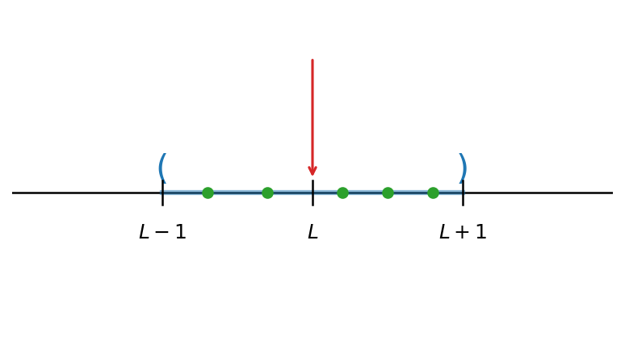
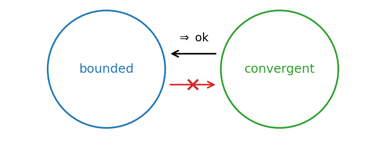
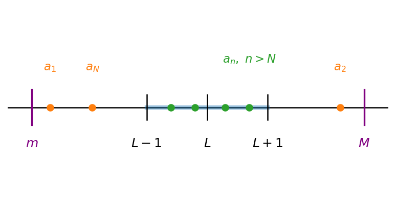

6 סדרות
6.1 הגדרת הגבול
סדרות של מספרים
סדרה היא אוסף אינסופי של מספרים ממשיים, עם חשיבות לסדר. \[a_1, a_2, a_3, \dots, a_n, \dots\]
(האיבר במקום ה-\(n\) של הסדרה)
דוגמה 6.1.1.
הסדרה \(a_n = n\) היא: \(1,2,3,\dots\)
הסדרה \(a_n = (-1)^n\) היא: \(-1,1,-1,1,\dots\)
הסדרה הקבועה \(a_n = 8\) היא: \(8,8,8,8,\dots\)
בדרך רקורסיבית:
נגדיר: \(a_1 = 1\), \(a_{n+1} = (n+1) \cdot a_n\) לכל \(n \geq 1\) \[a_3 = 3 \cdot a_2 = 3 \cdot 2 \cdot 1 = 6\]
גבול של סדרה
סדרה מתכנסת.
דוגמה 6.1.2.
מתכנסת ל-\(0\): \(a_n = \frac{1}{n}\) : \(1, \frac{1}{2}, \frac{1}{3}, \frac{1}{4}, \dots\)
מתכנסת לאינסוף: \(1,2,3,4,\dots\)
סדרה לא מתכנסת: \(-1,1,-1,1,-1,\dots\)
סדרה \((a_n)_{n=1}^{\infty}\) מתכנסת למספר \(L \in R\):
איברי הסדרה יהיו קרובים ל-\(L\) (הגבול) כמה שנגדיר, החל ממקום מסוים.
הגדרה 6.1.3.
סדרה \((a_n)_{n=1}^{\infty}\) מתכנסת למספר \(L \in R\), אם:
לכל מספר \(\varepsilon\) חיובי (השגיאה), קיים \(N \in \mathbb{N}\) (מקום השגיאה) כך שלכל \(n > N\) מתקיים \[|a_{n} - L| < \varepsilon\]
נניח, עבור \(\varepsilon = 1\): קיים \(N_1 \in \mathbb{N}\) כך (שהחל ממנו) לכל \(n > N_1\) \[|a_n - L| < 1\]
תרשים: ציר מספרים עם הקטע \((L-1,\,L+1)\) סביב הגבול \(L\) — כל איברי הסדרה נמצאים בקטע ממקום מסוים

אם \((a_n)_{n=1}^{\infty}\) מתכנסת ל-\(L\), נסמן זאת: \[\lim_{n \to \infty} a_n = L\]
דוגמא:
עבור \(a_n = \dfrac{1}{n}\) מתקיים \[\lim_{n \to \infty} a_n = 0\]
נראה כי
נרצה להראות שלכל \(\varepsilon > 0\), קיים \(N \in \mathbb{N}\) כך שלכל \(n > N\) מתקיים \[\left|\dfrac{1}{n} - 0\right| < \varepsilon\]
(עבור \(\varepsilon = 1\), ניקח \(N = 1\) ואכן לכל \(n > 1\): \(\left|\dfrac{1}{n} - 0\right| < 1\))
יהי \(\varepsilon > 0\), נחפש \(N \in \mathbb{N}\) כך שלכל \(n > N\) יתקיים \[\left|\dfrac{1}{n} - 0\right| < \varepsilon\]
מתקיים אם ורק אם \(n > \dfrac{1}{\varepsilon}\) \[\dfrac{1}{n} = \left|\dfrac{1}{n}\right| = \left|\dfrac{1}{n} - 0\right| < \varepsilon\]
הערה (מהמקור): תזכיר: ערך מוחלט ב’ זה אותו מקום בהגדרה.
לכל \(x \in R\) נסמן ע”י \(\lfloor x \rfloor\) את הערך השלם של \(x\), כעיגול כלפי מטה למספר שלם.
לכן ניקח: \(N = \left\lfloor \dfrac{1}{\varepsilon} \right\rfloor + 1\) והראנו שלכל \(n > N\): \[|a_{n} - 0| < \varepsilon\]
דוגמא נוספת:
עבור הסדרה \(a_n = \dfrac{3 \cdot n - 4}{n + 2}\) נראה כי: \[\lim_{n \to \infty} \left(\dfrac{3n - 4}{n + 2}\right) = 3\]
נראה זאת לפי ההגדרה:
יהי \(\varepsilon > 0\), נחפש \(N \in \mathbb{N}\) כך שלכל \(n > N\) מתקיים \[\left|\dfrac{3n - 4}{n + 2} - 3\right| < \varepsilon\]
נפשט את הביטוי: \[\left|\dfrac{3n - 4}{n + 2} - 3\right| = \left|\dfrac{3n - 4 - 3(n + 2)}{n + 2}\right| = \left|\dfrac{-4 - 6}{n + 2}\right| = \dfrac{10}{n + 2} < \varepsilon\]
נרצה: \[\dfrac{10}{n + 2} < \varepsilon\]
מתקיים: \[\dfrac{10}{n + 2} < \dfrac{10}{n} < \varepsilon\]
הערה (מהמקור): מקטינים את המכנה כדי להגדיל את האיבר.
לכן נבחר \(N = \left\lfloor \dfrac{10}{\varepsilon} \right\rfloor + 1\) ואז בוודאות לכל \(n > N\) מתקיים \[\left|\dfrac{3n - 4}{n + 2} - 3\right| < \varepsilon\]
דוגמא לסדרה לא מתכנסת:
נראה כי הסדרה \(a_n = (-1)^n\) לא מתכנסת, כלומר לכל \(L \in R\), נראה כי \[\lim_{n \to \infty} a_n \neq L\]
נניח בשלילה כי \(\lim_{n \to \infty} (-1)^n = L\) עבור \(L \in R\).
לכן עבור \(\varepsilon = \dfrac{1}{2}\), מהגדרת הגבול נובע שקיים \(N \in \mathbb{N}\) כך שלכל \(n > N\) מתקיים: \[\left|(-1)^n - L\right| < \dfrac{1}{2}\]
בפרט עבור \(n > N\) זוגי (\(n = 2 \cdot N\) כמו) מתקיים: \[\left|(-1)^n - L\right| < \dfrac{1}{2}\]
כלומר \(|1 - L| < \dfrac{1}{2}\) \(\Leftarrow\) \(-\dfrac{1}{2} < 1 - L \le \dfrac{1}{2}\) \(\Leftarrow\) \(-\dfrac{3}{2} < -L < -\dfrac{1}{2}\) \(\Leftarrow\) \(\boxed{\dfrac{1}{2} < L < \dfrac{3}{2}}\)
בדומה, נבחר \(n > N\) אי-זוגי (\(n = 2 \cdot N + 1\) כמו) מתקיים: \[\left|(-1)^n - L\right| < \dfrac{1}{2}\]
כלומר \(|-1 - L| < \dfrac{1}{2}\) \(\Leftarrow\) \(|L + 1| < \dfrac{1}{2}\) \(\Leftarrow\) \(-\dfrac{1}{2} < L + 1 < \dfrac{1}{2}\) \(\Leftarrow\) \(\boxed{-\dfrac{3}{2} < L < -\dfrac{1}{2}}\)
תרשים: שני קטעים זרים על ציר המספרים — \(\left(\tfrac12,\tfrac32\right)\) ו-\(\left(-\tfrac32,-\tfrac12\right)\) — המראים שלא קיים \(L\) יחיד, ומכאן הסתירה

זאת סתירה, ולכן \(\lim_{n \to \infty} (-1)^n\) לא קיים.
6.2 יחידות הגבול
יחידות הגבול
משפט 6.2.1.
אם \((a_n)_{n=1}^{\infty}\) סדרה המקיימת \(a_n \to L_1\) וגם \(a_n \to L_2\) אז \(L_1 = L_2\)
כלומר, אם סדרה מתכנסת אז הגבול שלה הוא יחיד.
הוכחה:
נניח בשלילה: \(L_1 \ne L_2\)
נסמן את המרחק: \(d = |L_1 - L_2| > 0\)
נבחר: \(\varepsilon = \dfrac{d}{4}\)
\(a_n\) עבור \(n > max\{N_1, N_2\}\) \(\leftarrow\) סתירה
תרשים: שני קטעי \(\varepsilon=\tfrac{d}{4}\) זרים סביב \(L_1\) ו-\(L_2\) במרחק \(d\) — איבר אחד אינו יכול להיות בשניהם, ומכאן הסתירה

6.3 חסימוּת של סדרה מתכנסת (וההיפך השגוי)
סדרה חסומה
הגדרה 6.3.1.
תהי \((a_n)_{n=1}^{\infty}\) סדרה, נגיד כי \(a_n\) חסומה, אם קיימים \(m,M \in R\) כך שלכל \(n\): \[m \le a_n \le M\]
דוגמאות:
\(a_n = \dfrac{1}{n}\) סדרה חסומה, כי: \(0 \le a_n \le 1\) לכל ח.
\(a_n = (-1)^n\) סדרה חסומה, כי: \(-1 \le (-1)^n \le 1\) לכל ח.
\(a_n = n\) לא סדרה חסומה, כי: לכל \(M\), יהיה \(a_n > M\)
למשל, ניקח את \(n = \lfloor M \rfloor + 1\) עבורו \(a_n = n > M\)
הקשר בין התכנסות לחסימות של סדרה
סדרה חסומה לא גורר שהיא מתכנסת.
לדוגמא: \(a_n = (-1)^n\)
תרשים: סדרה מתכנסת גוררת חסומה, אך סדרה חסומה אינה גוררת מתכנסת (אין גרירה הדדית)

אם \((a_n)_{n=1}^{\infty}\) סדרה מתכנסת, אז היא חסומה.
\(\downarrow\) הוכחת הטענה
נסמן \(a_n \to L\). מהגדרת הגבול, נבחר \(\varepsilon = 1\), אז קיים \(N\) כך שלכל \(n>N\) מתקיים: \[|a_n - L| < 1 \ \leftarrow \ L-1 < a_n < L+1\]
כלומר, בשביל לחסום את כל איברי הסדרה מלמעלה, ניקח: \(M = max\{L+1, a_1, \ldots, a_N\}\)
ואז בוודאות לכל ח: \(a_n \le M\)
ובשביל לחסום את כל איברי הסדרה מלמטה, ניקח: \(m = min\{L-1, a_1, \ldots, a_N\}\)
ואז בוודאות לכל ח: \(m \le a_n\)
תרשים: הזנב \(a_n\) (עבור \(n>N\)) בקטע \((L-1,L+1)\), והאיברים הראשונים שמחוץ לו — כל הסדרה חסומה בין \(m\) ל-\(M\)

- סדרה שאינה חסומה, אז היא אינה מתכנסת.
6.4 אריתמטיקה של גבולות
כלי להראות התכנסות של סדרה ומציאת גבול - אריתמטיקה
מתוך סדרות מתכנסות, נייצר סדרות נוספות שהן מתכנסות, ע”י: \(+\) , \(-\) , \(\cdot\) , \(:\) .
משפט 6.4.1.
אם \((a_n)_{n=1}^{\infty}\) , \((b_n)_{n=1}^{\infty}\) סדרות המקיימות \(a_n \to L_1\) , \(b_n \to L_2\) אז:
חיבור: הסדרה \((a_n + b_n)_{n=1}^{\infty}\) גם מתכנסת, ומתקיים \(a_n + b_n \to L_1 + L_2\)
חיסור: הסדרה \((a_n - b_n)_{n=1}^{\infty}\) גם מתכנסת, ומתקיים \(a_n - b_n \to L_1 - L_2\)
כפל: הסדרה \((a_n \cdot b_n)_{n=1}^{\infty}\) גם מתכנסת, ומתקיים \(a_n \cdot b_n \to L_1 \cdot L_2\)
חילוק: הסדרה \(\dfrac{a_n}{b_n}\) גם מתכנסת, ומתקיים \(\dfrac{a_n}{b_n} \to \dfrac{L_1}{L_2}\) (רק כאשר \(L_2 \ne 0\))
דוגמאות
דוגמה 6.4.2.
נראה כי הסדרה \(\dfrac{3n-4}{n+2}\) מתכנסת, ונמצא לאן.
הסדרה \(b_n = n+2\) לא מתכנסת, כי היא לא חסומה.
נפשט את \(a_n\) לפי החזקה הכי גדולה. כלומר, נחלק ב-ח את המונה ואת המכנה: \[a_n = \frac{3 - \dfrac{4}{n}}{1 + \dfrac{2}{n}} = \frac{\rightarrow 3}{\rightarrow 1} \to 3\]
\(\dfrac{4}{n} \to 4 \cdot \dfrac{1}{n} \to 0\) , \(\quad\) \(\dfrac{2}{n} \to 2 \cdot \dfrac{1}{n} \to 0\)
דוגמה 6.4.3.
מצאו את הגבול של הסדרה \[a_n = \frac{8n+3}{n^2+1}\]
נפשט ע”י חילוק בחזקה הכי גדולה במכנה: \[a_n = \frac{\dfrac{8}{n} + \dfrac{3}{n^2}}{1 + \dfrac{1}{n^2}} = \frac{\rightarrow 0}{\rightarrow 1} \to 0\]
\(\dfrac{1}{n^2} = \dfrac{1}{n} \cdot \dfrac{1}{n} \to 0\) , \(\quad\) \(\dfrac{8}{n} \to 8 \cdot \dfrac{1}{n} \to 0\) , \(\quad\) \(\dfrac{3}{n^2} = 3 \cdot \dfrac{1}{n} \cdot \dfrac{1}{n} \to 0\)
6.5 משפט הסנדוויץ׳; כפל אפסית בחסומה
משפט 6.5.1.
משפט הפיצה
אם \(a_n \leq b_n\) לכל \(n \geq 1\), ואם \(a_n \to \infty\), אז \[\lim_{n\to\infty} b_n = \infty\]
דוגמה 6.5.2.
דוגמא:
האם הסדרה \(b_n = n + (-1)^n\) מתכנסת במובן הרחב?
פתרון:
נראה כי \(b_n \to \infty\) מתקיים \(b_n \geq n - 1\) אם נסתכל על \(n - 1 \xrightarrow[\to\infty]{} \infty\)
אז מכלל הפיצה \[b_n \to \infty\]
דוגמה 6.5.3.
דוגמא:
האם הסדרה \(b_n = \dfrac{n^2}{n!}\) מתכנסת במובן הרחב?
פתרון:
\[b_n = \frac{n^2}{n!} = \frac{n \cdots n}{1 \cdot 2 \cdots n} = \frac{n}{1} \cdot \underbrace{\frac{n}{2}}_{\geq 1} \cdots \cdots \underbrace{\frac{n}{n}}_{\geq 1} \geq n \geq n \cdot 1 \cdots \cdots 1\]
לכן מכלל הפיצה \[b_n \to \infty\]
דוגמה 6.5.4.
דוגמא:
האם הסדרה \(b_n = \left(1 + \dfrac{1}{n}\right)^{n^2}\) מתכנסת במובן הרחב?
\[\left(1 + \frac{1}{n}\right)^{n^2} = \left(1 + \frac{1}{n}\right)^{n \cdot n} = \left(\left(1 + \frac{1}{n}\right)^n\right)^n\]
\[\left(1 + \frac{1}{n}\right)^n \to e\] כאשר \(\left(1 + \frac{1}{n}\right)^n > 2\) באשר הם מספר מאוחרים מסוים
\[a_n = \left(\left(1 + \frac{1}{n}\right)^n\right)^n > 2\] לבן הם מספר מאוחרים מסוים
הרי \(2^n \to \infty\) לכן מכלל הפיצה: \[\boxed{a_n \to \infty}\]
משפט 6.5.5.
כלל הפיצה ההפוכה
אם \(a_n \leq b_n\) לכל \(n \geq 1\), ואם \(b_n \to -\infty\), אז \[\lim_{n\to n} a_n = -\infty\]
6.6 מונוטוניות של סדרות; דוגמה
סדרה \((a_n)_{n=1}^{\infty}\) תיקרא:
מונוטונית עולה, אם \(a_n \le a_{n+1}\) לכל \(n \ge 1\).
מונוטונית יורדת, אם \(a_n \ge a_{n+1}\) לכל \(n \ge 1\).
מונוטונית עולה ממש, אם \(a_n < a_{n+1}\) לכל \(n \ge 1\).
מונוטונית יורדת ממש, אם \(a_n > a_{n+1}\) לכל \(n \ge 1\).
סדרה היא מונוטונית, אם היא מונוטונית עולה או יורדת.
דוגמאות:
\(a_n = n\) מונוטונית עולה ממש
כי לכל \(n \ge 1\): \(a_n = n < n+1 = a_{n+1}\)
\(c_n = \dfrac{1}{n}\) מונוטונית יורדת
כי לכל \(n \ge 1\): \(c_n = \dfrac{1}{n} > \dfrac{1}{n+1} = c_{n+1}\)
\(d_n = (-1)^n\) אינה מונוטונית
\(d_1 = -1\) , \(d_2 = 1\) , \(d_3 = -1\)
\(d_1 < d_2 , d_3 < d_2\)
6.7 סדרה חסומה ומונוטונית מתכנסת (ללא הוכחה)
\(a_n\) מונוטונית \(\not\Leftarrow\) \(a_n\) מתכנסת
דוגמא: \[a_n = n\]
\(a_n\) מתכנסת \(\not\Leftarrow\) \(a_n\) מונוטונית
דוגמא: \(a_n = \dfrac{(-1)^n}{n}\) (\(a_n \to 0\))
אם \((a_n)_{n=1}^{\infty}\) סדרה מונוטונית וחסומה, אז היא מתכנסת.
בהוכחה מראים כי \(a_n\) עולה ומתכנסת ל-\(M\), כאשר הוא לא סתם חסם שלה מלמעלה, אלא הוא החסם הכי קטן.
דוגמא:
נתונה סדרה \((a_n)_{n=1}^{\infty}\) באופן הרקורסיבי הבא:
\[a_1 = 1\]
\[a_{n+1} = \dfrac{a_n + 2}{2}\]
הראו כי הסדרה מתכנסת ומצאו את הגבול שלה.
פתרון:
ננסה להראות שהיא חסומה ומונוטונית, ולכן תתכנס.
חושדים שהיא עולה, כי \(a_3 > a_2 > a_1\) אז ננסה להראות ש \(a_n \le a_{n+1}\) , לכל \(n \ge 1\)
ננסה בעזרת אינדוקציה:
בסיס: נציב \(n=1\) ונבדוק: \(a_1 = 1 \le a_2 = \dfrac{3}{2}\)
כעת נניח כי \(a_n \le a_{n+1}\) , ונראה כי \(a_{n+1} \le a_{n+2}\) :
\[a_{n+1} = \dfrac{a_n + 2}{2} \le \dfrac{a_{n+1} + 2}{2} = a_{n+2}\]
ולכן \(a_n\) עולה.
מכך שהיא עולה: \(1 = a_1 \le a_n\) , לכל \(n \ge 1\).
אבל עדיין חסר: \(a_n \le M\)
נקבע מהו M בהמשך, אבל בינתיים ננסה להראות באינדוקציה כי: \(a_n \le M\) לכל \(n \ge 1\).
בסיס: עבור n=1: \(a_1 = 1 \le M\)
\[\downarrow\]
נדרוש \(M \ge 1\)
נניח כי \(a_n \le M\) , ונראה כי \(a_{n+1} \le M\) : \(a_{n+1} = \dfrac{a_n + 2}{2} \le \dfrac{M + 2}{2}\)
לכן נדרוש ש: \(\dfrac{M + 2}{2} \le M\)
\[M + 2 \le 2M\]
\[2 \le M\]
\[\downarrow\]
\[a_{n+1} \le \dfrac{M + 2}{2} \le M\]
הראנו כי \(a_n\) עולה וחסומה, ולכן מתכנסת.
נסמן: \(a_n \to L\)
ואז: \(\dfrac{a_n + 2}{2} \to \dfrac{L + 2}{2}\)
מצד שני, מתקיים \(a_n \to L\) כי \(a_{n+1} \to L\) אבל \(a_{n+1} = \dfrac{a_n + 2}{2}\)
לכן מיחידות הגבול: \(L = \dfrac{L + 2}{L} \Rightarrow \boxed{L = 2}\)
דוגמא שימושית:
הסדרה \(a_n = \left(1 + \dfrac{1}{n}\right)^n\) מונוטונית עולה וגם חסומה (בין 2 ל-3), ולכן היא מתכנסת.
נסמן את הגבול של הסדרה ע”י \(e\), מספר כלשהוא בין 2 ל-3. כלומר:
\[\boxed{\left(1 + \dfrac{1}{n}\right)^n \to e}\]
6.8 המספר \(e\) והסדרה המתאימה
המספר \(e\) והסדרה \((1+\tfrac1n)^n\) נדונים יחד עם המשפט על התכנסות סדרה חסומה ומונוטונית (לעיל) ובסעיף ״משפטי התכנסות״. יש לרכז ולהרחיב כאן.
6.9 אינסוף כגבול
הסדרה \(a_n\) מתכנסת לאינסוף, אם לכל \(M > 0\) , קיים N טבעי, כך שלכל \(n > N\)
מתקיים: \(a_n > M\)
\[\lim_{n \to \infty} a_n = \infty\]
דוגמאות: \(a_n = n, a_n = n+1, a_n = n^2\)
הסדרה \(a_n\) מתכנסת לאינסוף, אם לכל \(M > 0\), קיים \(N\) טבעי, כך שלכל \(n > \mathbb{N}\)
מתקיים: \[a_n > M\]
\[\lim_{n \to \infty} a_n = \infty\]
דוגמאות: \(a_n = n, a_n = n + 1, a_n = n^2\)
הסדרה \(a_n\) מתכנסת למינוס אינסוף, אם לכל \(M < 0\), קיים \(N\) טבעי, כך שלכל \(n > \mathbb{N}\)
מתקיים: \[a_n < M\]
\[\lim_{n \to \infty} a_n = -\infty\]
תהי סדרה \(a_n\).
מתקיים: \(a_n \to -\infty\) אם ורק אם \(-a_n \to \infty\)
דוגמא: \[\lim_{n \to \infty} \frac{-n^2 - \sin(n)}{2n + 3} = -\infty\]
נראה לפי הגדרה שמתקיים
פתרון:
יהי \(M < 0\), אז ננסה להבין מתי \(a_n < M\)
\[a_n = \frac{-n^2 - \sin(n)}{2n + 3}\]
\[-1 \le \sin(n) \le 1 \longrightarrow -\sin(n) < 1\]
\[a_n = \frac{-n^2 - \sin(n)}{2n + 3} < \frac{-n^2 + 1}{2n + 3} < \frac{-n^2 + 1}{2n + n} = \frac{-n^2 + 1}{3 \cdot n} = \frac{-n}{3} + \frac{1}{3n} < -\frac{n}{3} + 1\]
נרצה לדרוש: \(-\frac{n}{3} + 1 < M \quad\leftarrow\quad -\frac{n}{3} < M - 1 \quad\leftarrow\quad n > -3(M-1)\)
לכן נבחר: \(N = \lfloor -3(M-1) \rfloor + 1\) וכך לכל \(n > N\): \(a_n < M\)
סדרה נקראת מתכנסת במובן הרחב, אם יש לה גבול ששווה למספר כלשהוא או אינסוף או מינוס אינסוף.
משפט 6.9.1.
שאיפות:
(א) אם \(a_n \to \infty\), \(b_n \to \infty\) אז \(a_n + b_n \to \infty\)
(ב) אם \(a_n \to \infty\), \(b_n \to \infty\) אז \(a_n \cdot b_n \to \infty\)
(ג) אם \(a_n \to \infty\), \(b_n \to L\) (\(L > 0\)) אז \(a_n + b_n \to \infty\)
(ד) אם \(a_n \to \infty\), \(b_n \to L\) (\(L > 0\)) אז \(a_n \cdot b_n \to \infty\)
(ה) אם \(a_n \to \infty\), \(b_n \to L\) (\(L < 0\)) אז \(a_n \cdot b_n \to -\infty\)
(ו) אם \(a_n \to \infty\) אז \(\frac{1}{a_n} \to 0\)
(ז) אם \(a_n \to -\infty\) אז \(\frac{1}{a_n} \to 0\)
(ח) אם \(a_n \to 0\), וגם \(a_n > 0\) אז \(\frac{1}{a_n} \to \infty\)
(ט) אם \(a_n \to 0\), וגם \(a_n < 0\) אז \(\frac{1}{a_n} \to -\infty\)
\(\star\) אין חוקיות ל \(\infty - \infty\):
| \(a_n \to \infty\) | \(b_n \to \infty\) | \(a_n - b_n\) |
|---|---|---|
| n | n+1 | -1 |
| n+L | n | L |
| \(n^2\) | n | \(\infty\) |
\[n^2 - n \to \infty\]
\[\underset{\to \infty}{n^2} - \underset{\to \infty}{n} = n(n-1)\]
\(\star\) אין חוקיות ל \(\infty \cdot 0\):
| \(a_n \to \infty\) | \(b_n \to \infty\) | \(a_n \cdot b_n\) |
|---|---|---|
| n | \(\frac{1}{n}\) | 1 |
| n | \(\frac{L}{n}\) | L (\(L \in \mathbb{R}\)) |
| \(n^2\) | \(\frac{1}{n} \Big/ -\frac{1}{n}\) | \(\infty \Big/ -\infty\) |
| n | \(\frac{(-1)^n}{n}\) | \((-1)^n\) — לא מתכנסת אפילו במובן הרחב |
\(\star\)
| \(a_n \to 0\) | \(\frac{1}{a_n}\) |
|---|---|
| \(a_n = \frac{1}{n}\) | \(\infty\) |
| \(a_n = -\frac{1}{n}\) | \(-\infty\) |
| \(\frac{(-1)^n}{n}\) | לא מתכנסת אפילו במובן הרחב |
עבור \(a_n = \frac{(-1)^n}{n}\)
נראה כי \(\frac{1}{a_n} = \frac{n}{(-1)^n} = (-1)^n \cdot n\)
\[(-1, 2, -3, 4, -5, \ldots)\]
6.10 מבחן המנה ומבחן השורש
מבחן המנה
אם \(a_n > 0\), ואם \(\displaystyle\lim_{n\to\infty} \frac{a_{n+1}}{a_n} = L\), אז:
- אם \(L > 1\): \(a_n \to \infty\)
- אם \(L < 1\): \(a_n \to 0\)
מבחן השורש
אם \(a_n > 0\), ואם \(\displaystyle\lim_{n\to\infty} \sqrt[n]{a_n} = L\), אז:
- אם \(L > 1\): \(a_n \to \infty\)
- אם \(L < 1\): \(a_n \to 0\)
דוגמה 6.10.1.
דוגמאות:
- חשבו את הגבול \[\lim_{n\to\infty} \frac{2^n}{n^2}\]
נסמן: \[a_n = \frac{2^n}{n^2}\]
נסתכל על מבחן המנה:
\[\frac{a_{n+1}}{a_n} = \frac{\left(\frac{2^{n+1}}{(n+1)^2}\right)}{\left(\frac{2^n}{n^2}\right)} = \frac{n^2}{2^n} \cdot \frac{2^{n+1}}{(n+1)^2} = 2 \cdot \frac{n^2}{(n+1)^2} = 2 \cdot \frac{1}{\left(\frac{n+1}{n}\right)^2} = 2 \cdot \frac{1}{\left(1 + \frac{1}{n}\right)^2} \to 2\]
לכן לפי מבחן המנה נקבל: \[\boxed{\lim_{n\to\infty} \frac{2^n}{n^2} = \infty}\]
דוגמה 6.10.2.
- הסדרה \(a_n = 3^n\) היא \(a_n \to \infty\), מדוע?
בעזרת מבחן השורש:
\[\sqrt[n]{a_n} = 3 \xrightarrow[n\to\infty]{} 3\] וגם \(a_n > 0\)
- \(q > 1\): \(q^n \to \infty\)
- \(0 < q < 1\): \(q^n \to 0\)
משפט דלאמבר:
אם \(a_n\) חיובית, ואם \(\lim_{n\to\infty}\frac{a_{n+1}}{a_n}=L\) אז \(\lim_{n\to\infty}\sqrt[n]{a_n}=L\)
דוגמה 6.10.3.
דוגמא:
נבדוק מהו הגבול של הסדרה \(\sqrt[n]{n}=\sqrt[n]{a_n}\) ?
\[(1,\sqrt{2},\sqrt[3]{3},\sqrt[4]{4},\dots)\]
פתרון:
נסמן: \(a_n=n\) ונרצה לבדוק לאן מתכנסת הסדרה \(\sqrt[n]{a_n}\)
ננסה להשתמש במשפט דלאמבר ונבדוק:
\[\frac{a_{n+1}}{a_n}=\frac{n+1}{n}=\frac{n}{n}+\frac{1}{n}=1+\frac{1}{n}\longrightarrow 1\]
ולכן מדלאמבר נקבל \(\sqrt[n]{a_n}=\sqrt[n]{n}\longrightarrow \boxed{1}\)
אריתמטיקה של חזקות בשאיפות
אם \(a_n\to L\) ואם \((a_n>0, L>0)\) \(\quad b_n\to x\) \(\quad (x\in R)\) אז \(a_n^{b_n}\to L^x\)
דוגמאות:
\(\left(1+\frac{1}{n}\right)^{1+\frac{1}{n}}\Rightarrow 1^1=\boxed{1}\)
\(\left(1+\frac{1}{n}\right)^{\frac{2n^2+n+1}{3n-5}}=\left(1+\frac{1}{n}\right)^{n\cdot\left(\frac{2n^2+n+1}{3n-5}\right)}=\left(\left(1+\frac{1}{n}\right)^n\right)^{\frac{2n^2+n+1}{3n-5}}\longrightarrow e^{\frac{2}{3}}\)
6.11 יחסי הגדילה הבסיסיים: \(n^k \ll k^n \ll n! \ll n^n\)
סדר שואף לאינסוף בסדרות
סדרות שמתכנסות לאינסוף לפי שאיפה יותר “חזקה”: \(n^2<2^n<<n!<<n^n\)
\[\frac{n^2}{n!},\frac{n!}{2^n},\frac{2^n}{n^2}\to\infty\]
\[(x>0),\; n^x<<q^n<<n!<<n^n\]
6.12 תת-סדרות
תהי \((a_n)_{n=1}^{\infty}\) סדרה.
תת סדרה שלה היא אוסף אינסופי של איברי הסדרה, ושומרים על הסדר.
דוגמאות:
\[a_n=a_1,a_2,a_3,a_4,\dots\]
\((a_{2n-1})_{n=1}^{\infty}:a_1,a_3,a_5,\dots\)
\((a_{2n})_{n=1}^{\infty}:a_2,a_4,a_6,\dots\)
\((a_{2^n})_{n=1}^{\infty}:a_2,a_4,a_8,\dots\)
הגדרה 6.12.1.
אם \((a_{n_k})_{k=1}^{\infty}\) תת סדרה של \(a_n\) , ואם היא מתכנסת ל-\(L\), אז נקרא ל-\(L\) גבול חלקי של \(a_n\) .
\[a_{n_k}=a_{n_1},a_{n_2},a_{n_3},\dots \qquad a_{n_k}\xrightarrow[k\to\infty]{}L\]
דוגמה 6.12.2.
דוגמא:
לסדרה \(a_n=(-1)^n\) יש שני גבולות חלקיים: \(1\) , \(-1\)
\[a_n=-1,1,-1,1,-1,1,\dots \qquad a_{2n}\to\boxed{1} \quad,\quad a_{2n-1}\to\boxed{-1}\]
הסדרה \(a_n\) מתכנסת ל-\(L\), אם ורק אם כל הגבולות החלקיים שלה שווים ל-\(L\), וכל תת סדרה שלה תתכנס ל-\(L\).
כלומר, אם מצאנו שתי תת סדרות של \(a_n\) שמתכנסות לגבולות שונים, אז \(a_n\) לא מתכנסת.
אם מצאנו כי יש מספר של תתי סדרות של \(a_n\), שהן מכסות את הסדרה כולה, וידוע לנו לאן הן מתכנסות, אז אלו כל הגבולות החלקיים של \(a_n\).
דוגמה 6.12.3.
מצאו את כל הגבולות החלקיים של הסדרה:
\[a_n = (\frac{\cos(\frac{\pi}{2} \cdot n) \cdot 2n}{3n + 4} + \frac{\sin(\frac{\pi}{2} \cdot n) \cdot (2n^2 + n - 3)}{3n^2 + 5n})^2\]
תזכורת:
\[\cos(\frac{\pi}{2}) = \cos(\frac{3\pi}{2}) = 0 \qquad \sin(\frac{\pi}{2}) = \sin(\frac{5\pi}{2}) = 1\]
\[\cos(\frac{2\pi}{2}) = -1 \qquad \sin(\pi) = \sin(\frac{4\pi}{2}) = 0\]
\[\cos(\frac{4\pi}{2}) = 1 \qquad \sin(\frac{3\pi}{2}) = -1\]
נסתכל על תתי הסדרות:
\(a_{4n+1}\):
\[\cos(\frac{\pi}{2} \cdot (4n + 1)) = \cos(\frac{\pi}{2} + 2\pi n) = 0 \qquad , \qquad \sin(\frac{\pi}{2} \cdot (4n + 1)) = \sin(\frac{\pi}{2} + 2\pi n) = 1\]
\[a_{4n+1} = (\frac{0 \cdot 2n}{3n + 4} + \frac{1(2n^2 + n - 3)}{3n^2 + 5n})^2 = (\frac{2n^2 + n - 3}{3n^2 + 5n})^2 \to (\frac{2}{3})^2\]
\(a_{4n+2}\):
\[\cos(\frac{\pi}{2} \cdot (4n + 2)) = \cos(\frac{2\pi}{2} + 2\pi n) = -1 \qquad , \qquad \sin(\frac{\pi}{2} \cdot (4n + 2)) = \sin(\frac{2\pi}{2} + 2\pi n) = 0\]
\[a_{4n+2} = (\frac{-1 \cdot 2n}{3n + 4} + \frac{0 \cdot (2n^2 + n - 3)}{3n^2 + 5n})^2 \to (-\frac{2}{3})^2\]
\(a_{4n+3}\):
\[\cos(\frac{\pi}{2} \cdot (4n + 3)) = \cos(\frac{3\pi}{2} + 2\pi n) = 0 \qquad , \qquad \sin(\frac{\pi}{2} \cdot (4n + 3)) = \sin(\frac{3\pi}{2} + 2\pi n) = -1\]
\[a_{4n+3} = (\frac{0 \cdot 2n}{3n + 4} + \frac{-1 \cdot (2n^2 + n - 3)}{3n^2 + 5n})^2 \to (-\frac{2}{3})^2\]
\(a_{4n+4}\):
\[\cos(\frac{\pi}{2} \cdot (4n + 4)) = \cos(\frac{4\pi}{2} + 2\pi n) = 1 \qquad , \qquad \sin(\frac{\pi}{2} \cdot (4n + 4)) = \sin(\frac{4\pi}{2} + 2\pi n) = 0\]
\[a_{4n+3} = (\frac{1 \cdot 2n}{3n + 4} + \frac{0 \cdot (2n^2 + n - 3)}{3n^2 + 5n})^2 \to (\frac{2}{3})^2\]
קיבלנו כי \(\frac{4}{9}\) הוא הגבול החלקי של הסדרה.
לכן \(a_n \to \frac{4}{9}\)
6.13 משפט בולצאנו–ויירשטראס (ללא הוכחה)
משפט 6.13.1.
משפט החסומה והמונוטונית
אם \(a_n\) סדרה חסומה, אז קיימת לה תת סדרה שמתכנסת למספר במובן הרחב.
משפט 6.13.2.
משפט התכנסות הסדרות המונוטוניות
אם \(a_n\) סדרה מונוטונית, אז היא מתכנסת במובן הרחב.
כלומר, אם \(a_n\) חסומה, אז היא מתכנסת למספר.
אבל אם \(a_n\) לא חסומה, אז \(a_n \to \infty\) עולה, או \(a_n \to -\infty\) יורדת.
משפט 6.13.3.
משפט הסנדוויץ’ החזק
אם \(a_n\) סדרה מתכנסת ל-\(L\) ו-\(m \le a_n \le M\) אזי \(m \le L \le M\).
משפט 6.13.4.
הגבול \(e\)
אם \(a_n \to 0\) אזי \((1 + a_n)^{\frac{1}{a_n}} \to e\) או \((1 + \frac{1}{n})^n \to e\)
דוגמה 6.13.5.
לאן מתכנסת הסדרה \((1 - \frac{1}{n})^n\)
\[(1 - \frac{1}{n})^n \to \frac{1}{e}\]
ולכן \(\frac{1}{(1 - \frac{1}{n})^n}\) ונקבל: \((1 - \frac{1}{n})^{-n} \to e\) כי: נציב את \(a_n = -\frac{1}{n}\)
משפט 6.13.6.
משפט גבול שורש
\[\sqrt[n]{q} \to 1\] לכל קבוע \(0 < q\)
דוגמה 6.13.7.
\[\sqrt[n]{2} = 2^{\frac{1}{n}} \to 2^0 = 1\]
6.14 הגבול העליון והגבול התחתון (ללא הוכחות)
תוכן בהכנה — להשלמה.
6.15 סדרות מהצורה \((1+a_n)^{1/a_n}\) כאשר \(a_n\to 0\)
הצורה הכללית \((1+a_n)^{1/a_n}\) מבוססת על הגבול \((1+\tfrac1n)^n\to e\) שנדון לעיל. להשלמה.